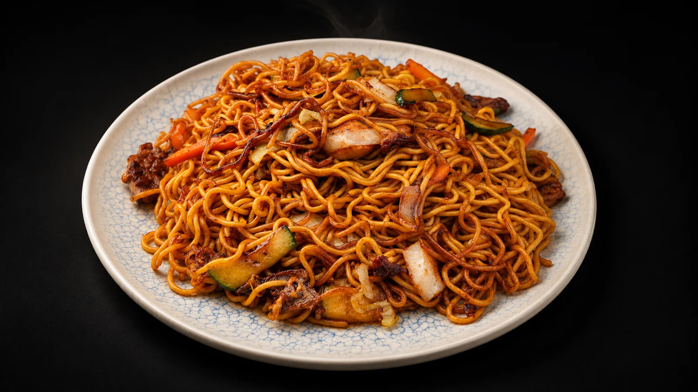

“Todo muy bien”Extracto de Google · 5/5Ver en Google FUENGIROLA · ASIAN FOOD & COFFEE
EL SABOR
TIENE REY.
Un poco de Asia. Mucho de nosotros.
Tu próxima mesa favorita está aquí.
HECHO PARA DISFRUTAR
DE ASIA A TU MESA.
CON ACENTO PROPIO.
Gyozas para compartir. Un wok hecho a tu gusto. Ese curry al que siempre vuelves. En Rey Mono, la mejor parte es decidir por dónde empezar.
Encuentra tu favorito
TU WOK. TUS REGLAS.HECHO
HECHO
A TU GUSTO.
Elige tu base, añade proteína y encuentra tu salsa favorita.
Crea tu combinaciónNOODLES · VERDURAS · POLLODEL WOK A LA MESA
TU PRÓXIMO
FAVORITO.
Empieza por el wok de verduras y huevo.
El resto, lo eliges tú.
QUIEN VIENE, LO CUENTA
BUEN SABOR.
BUENAS PALABRAS.
Opiniones de nuestros clientes
300 reseñas de 5 estrellasDesliza hacia abajo para leer las 300 reseñas, de más reciente a más antigua.
“Sitio 100% recomendado, aconsejable reservar”Extracto de Google · 5/5Ver en Google “Riquísimo todo”Extracto de Google · 5/5Ver en Google “Me ha gustado mucho el ambiente y sobre todo la comida estaba muy buena , repetiremos ”Extracto de Google · 5/5Ver en Google “Buena atencion,comida abundante y rica, limpieza de 10. Clienta habitual desde sus comienzos. Excelentes.”Extracto de Google · 5/5Ver en Google “Ir a este sitio es apostar a caballo ganador ,nunca falla, todos muy atentos y muy rápidos. Todo…”Extracto de Google · 5/5Ver en Google “¡ Fui hace unas tres semanas a comer con mi familia y todos estamos deseando volver ! Los…”Extracto de Google · 5/5Ver en Google “Fuimos en la feria de Fuengirola y había muchísima gente y el servicio fue rapidísimo todo lo que…”Extracto de Google · 5/5Ver en Google “Comida y trato genial”Extracto de Google · 5/5Ver en Google “Un sitio muy agradable y recomendable para comer y cenar con un servicio excelente .”Extracto de Google · 5/5Ver en Google “Comida tremenda, un trato super bueno, el mejor servicio y a un precio muy aceptable para los tiempos…”Extracto de Google · 5/5Ver en Google “Sitio genial, trato excelente, muy buena comida y buenos precios. ¡Recomendado!”Extracto de Google · 5/5Ver en Google “Mi restaurante favorito. La comida buenísima, el servicio genial y el ambiente de 10. Suelo ir un par…”Extracto de Google · 5/5Ver en Google “Todo buenísimo. Servicio rápido.”Extracto de Google · 5/5Ver en Google “He venido tres veces y siempre me voy contento. Raciones generosas, recetas muy cuidadas, muy buen servicio por…”Extracto de Google · 5/5Ver en Google “Muy bien todo y el chico Rafael muy agradable y muy atento.”Extracto de Google · 5/5Ver en Google “Llevo tres años yendo y la verdad es que da gusto por todo, por la atención, la comida,…”Extracto de Google · 5/5Ver en Google “Es sin duda uno de mis lugares favoritos para comer. El paquete completo. Buena comida, servicio rápido y…”Extracto de Google · 5/5Ver en Google “Muy recomendable! La comida top”Extracto de Google · 5/5Ver en Google “Comida rica, de calidad y abundante, excelente atención, quizás el local un poco ruidoso pero que no incide…”Extracto de Google · 5/5Ver en Google “La comida estupenda pero la atención todavía mejor! Y el precio genial también! Muy recomendable ”Extracto de Google · 5/5Ver en Google “Muy buen lugar para cenar en grupo”Extracto de Google · 5/5Ver en Google “Nunca fallan. Amabilidad, buen servicio y buena comida.”Extracto de Google · 5/5Ver en Google “La comida está exquisita y la atención es inmejorable. No nos cansamos de repetir la experiencia y siempre…”Extracto de Google · 5/5Ver en Google “Muy buen sitio, servicio excelente, comida con opcion sin gluten deliciosa, 100% recomendable”Extracto de Google · 5/5Ver en Google “Traigo a mi mono Angel aquí cada vez que puedo. No le gusta el rey mono porque es…”Extracto de Google · 5/5Ver en Google “No hay mejor sitio en Fuengirola. Comida buenísima, buenas cantidades y precios competentes. Sin duda súper recomendable. los…”Extracto de Google · 5/5Ver en Google “Magnífico restaurante de comida japonesa, una carta económica y con una muy buena variedad, destacan tres grandes opciones…”Extracto de Google · 5/5Ver en Google “Muy buena comida y trato EXCELENTE!!!”Extracto de Google · 5/5Ver en Google “La comida es muy buena raciones bastante grandes pero he ido varias veces y el ruido ambiente llega…”Extracto de Google · 5/5Ver en Google “Fenomenal”Extracto de Google · 5/5Ver en Google “Buenísimo todo el menú súper económico para la riquísimo que esta recomendado”Extracto de Google · 5/5Ver en Google “Todo buenísimo y los camareros súper simpáticos y eficientes”Extracto de Google · 5/5Ver en Google “Todo lo que probamos ha estado muy bien, amplia carta y camareros.muy amables que saben lo.que ofrecen y…”Extracto de Google · 5/5Ver en Google “A great little restaurant for a quick dinner. The service was very helpful and friendly.”Extracto de Google · 5/5Ver en Google “Los chicos muy amables y siempre a disposición. La comida muy rica y a buen precio. Si me…”Extracto de Google · 5/5Ver en Google “Siempre es muy grato comer o cenar, repetimos cada vez.que vamos a Fuengirola.”Extracto de Google · 5/5Ver en Google “Hemos venido a cenar y nos han puesto unos platos increíbles y enormes, un 10 para Rubén el…”Extracto de Google · 5/5Ver en Google “Felicidades al cocinero Rubén, comida riquísima y encima asequible, camareros súper atentos y sitio de 10, súper recomendable”Extracto de Google · 5/5Ver en Google “Como siempre es un gusto ir a este lugar”Extracto de Google · 5/5Ver en Google “Todo riquísimo”Extracto de Google · 5/5Ver en Google “Excelente servicio y muy buena atención”Extracto de Google · 5/5Ver en Google “el camarero Anthony ha sido super agradable con nosotros y muy atento se agredecen personas asi de cara…”Extracto de Google · 5/5Ver en Google “Vinimos a la hora de cenar y nos atendió Anthony desde que llegamos ,súper agradable siempre con una…”Extracto de Google · 5/5Ver en Google “Buen servicio y comida con buena relación calidad precio”Extracto de Google · 5/5Ver en Google “Nos encantó. La comida estaba buenísima, las raciones son muy generosas para el precio y el servicio fue…”Extracto de Google · 5/5Ver en Google “Todo muy rico. Raciones grandes y atención sobresaliente. Volveremos”Extracto de Google · 5/5Ver en Google “A pesar de que llegamos tarde, muy amablemente, nos mantuvieron la reserva. La comida, rica; los platos, abundantes…”Extracto de Google · 5/5Ver en Google “La comida es delicosa y los camareros amables y profesionales fue una cena maravillosa.”Extracto de Google · 5/5Ver en Google “I found it incredibly delicious. We had the pokebowl. You can customize your own pokebowl here in terms…”Extracto de Google · 5/5Ver en Google “Visita obligada si vienes a echar el dia a Fuengirola. Está todo exquisito, y el precio no puede…”Extracto de Google · 5/5Ver en Google “Salvo que es algo pequeño el salon todo muy bien, excelente comida y atención.”Extracto de Google · 5/5Ver en Google “Very very tasty. Staff very kind and helpful. Food came very quickly and super fresh, very generous portions.…”Extracto de Google · 5/5Ver en Google “EXCELENTE”Extracto de Google · 5/5Ver en Google “Fuimos simplemente a tomar algo para refrescarnos. Fueron muy amables ya que estaban hasta arriba con las mesas…”Extracto de Google · 5/5Ver en Google “Todo genial comida , servicio y precio para repetir sin duda”Extracto de Google · 5/5Ver en Google “Mi restaurante de comida asiática favorito de Fuengirola, los noodles con pollo y salsa teriyaki son una delicia.…”Extracto de Google · 5/5Ver en Google “Muy rica la comida, del servicio ninguna queja, son muy atentos y simpáticos y de calidad/precio muy bien…”Extracto de Google · 5/5Ver en Google “Siempre nos había llamado la atención. Habitualmente está lleno y con gente esperando en la calle. Finalmente entramos…”Extracto de Google · 5/5Ver en Google “fuimos 4 y es obligatorio repetir, 16€pp con bebida, entrante y plato principal y aun asi sobro comida,…”Extracto de Google · 5/5Ver en Google “tiene las 3 “b” y raciones MUY generosas”Extracto de Google · 5/5Ver en Google “La primera vez que voy al Rey Mono, el personal muy amables y atentos, la comida buenísima, mucha…”Extracto de Google · 5/5Ver en Google “La comida riquísima y la atención al cliente Excelente! I”Extracto de Google · 5/5Ver en Google “Buena comida y mejor atención”Extracto de Google · 5/5Ver en Google “Como siempre, una maravilla, la comida buenisima, una atencion excelente, lo recomiendo 100%”Extracto de Google · 5/5Ver en Google “Como siempre la comida buenísima y el trato al cliente muy bueno. Muy simpáticos y agradables todo el…”Extracto de Google · 5/5Ver en Google “Uno de los mejores sitios donde he comido. Volveremos más veces!”Extracto de Google · 5/5Ver en Google “Un lugar al que siempre hay que volver, buena calidad h buena cantidad. Los empleados son serviciales y…”Extracto de Google · 5/5Ver en Google “Vamos a menudo. Y Nunca defrauda”Extracto de Google · 5/5Ver en Google “Desde hace tiempo como aquí y tenía tiempo sin venir. Vuelvo a ir y todo está igual o…”Extracto de Google · 5/5Ver en Google “Comida excelente. Platos muy generosos y la atención extraordinaria. Anthony ha sido muy amable, atento y facilitándonos un…”Extracto de Google · 5/5Ver en Google “Muy bueno todo, la primera vez y espero que no sea la última”Extracto de Google · 5/5Ver en Google “Cómo siempre todo perfecto. Gracias”Extracto de Google · 5/5Ver en Google “Muy buen servicio, una atención perfecta,100% recomendación.”Extracto de Google · 5/5Ver en Google “Llevo cerca de 2 años yendo a este restaurante, eso ya dice mucho de que el sitio merece…”Extracto de Google · 5/5Ver en Google “Comida buenísima. Lugar maravilloso y un trato excepcional”Extracto de Google · 5/5Ver en Google “Comida de muy buena calidad, con una atención por parte del personal extraordinaria, restaurante muy agradable y muy…”Extracto de Google · 5/5Ver en Google “Desde que lo descubrimos, cada vez que vamos pedimos un plato diferente y cada cual más bueno! A…”Extracto de Google · 5/5Ver en Google “La comida riquísima, excelente. El personal súper atento y amable. Y la variedad en la carta hizo que…”Extracto de Google · 5/5Ver en Google “Da igual cuando vayas sea de tardeo de almuerzo o cena, es imprescindible la visita a Rey Mono…”Extracto de Google · 5/5Ver en Google “Todo está muy bueno y cantidad.”Extracto de Google · 5/5Ver en Google “Me ha gustado mucho la comida y el servicio, por todo ello volveré a ir y os lo…”Extracto de Google · 5/5Ver en Google “Excelente relación calidad precio. Los camareros super simpáticos. Comida muy rica. Eso sí mejor reservar.”Extracto de Google · 5/5Ver en Google “Todo riquísimo.”Extracto de Google · 5/5Ver en Google “Servicio excelente, comida exquisita y precio barato. Nos encanta”Extracto de Google · 5/5Ver en Google “Somos asiduos del Rey Mono y cada vez que vamos salimos satisfechos. El servicio es excelente, la comida…”Extracto de Google · 5/5Ver en Google “Nos encanta ir, es un sitio donde volvemos una y otra vez. El personal es excelente y la…”Extracto de Google · 5/5Ver en Google “Always perfect.”Extracto de Google · 5/5Ver en Google “Comida muy buena y en cantidad. Los ingredientes son de calidad. Te atienden con mucha amabilidad.”Extracto de Google · 5/5Ver en Google “Buenas relación calidad precio”Extracto de Google · 5/5Ver en Google “Está muy rico todo y merece la pena probar todas las opciones, menú combo, wok o bowl. Y…”Extracto de Google · 5/5Ver en Google “¡Todo súper bueno y sitio muy bien, muy recomendable!”Extracto de Google · 5/5Ver en Google “Beautiful place, wonderful meal, lots of to choose from!”Extracto de Google · 5/5Ver en Google “La comida es espectacular, todo riquísimo, precios increibles, la atención es inmejorable. Ahora mismo, de lo mejor de…”Extracto de Google · 5/5Ver en Google “¡Un lugar para repetir mil veces! La comida muy rica, precios buenos, localización fantástica, decoración y mobiliario excelente,…”Extracto de Google · 5/5Ver en Google “Buen sitio para comer y cenar. Comida diferente, fusión con sabores y texturas. Personal muy agradable y todo…”Extracto de Google · 5/5Ver en Google “ …”Extracto de Google · 5/5Ver en Google “Llevo varios años viniendo, uno de mis lugares favoritos de Fuengirola si me apetece comida asiática. El trato…”Extracto de Google · 5/5Ver en Google “Lugar muy bueno, atencion fantastica e inmejorable. Platos con mucha cantidad.”Extracto de Google · 5/5Ver en Google “Lugar de comida de calidad y precio.”Extracto de Google · 5/5Ver en Google “Como siempre. Todo genial. Comida muy buena y servicio estupendo. Seguiremos repitiendo. :)”Extracto de Google · 5/5Ver en Google “Comida buena y el personal amable y atento como siempre, muy recomendable”Extracto de Google · 5/5Ver en Google “Cada vez que visitamos este restaurante se superan, comida buenísima, y personal agradable y profesional.”Extracto de Google · 5/5Ver en Google “La comida súper buena, y la atención aún mejor. En especial a Teo, servicial, amable y eficiente. Volveré”Extracto de Google · 5/5Ver en Google “Uno de mis lugares favoritos para comer. Todo está delicioso y tiene camareros muy amables y atentos. Cocineros…”Extracto de Google · 5/5Ver en Google “Se come súper bien, comida de buena calidad y con sabor. El personal súper agradable. Os recomiendo reservar…”Extracto de Google · 5/5Ver en Google “Cene con mi pareja y nos quedamos a gusto. La comida deliciosa y el servicio explendido.”Extracto de Google · 5/5Ver en Google “Really good set, good value for money …”Extracto de Google · 5/5Ver en Google “Nos encanta este restaurante, sobre todo los Wok con salsa teriyaki. El personal es amable y simpático, y…”Extracto de Google · 5/5Ver en Google “Platos abundantes y muy sabrosos, además del servicio de los chicos que son muy atentos. Vengo todos los…”Extracto de Google · 5/5Ver en Google “La comida y el trato buenísimos(nos atendió Rafa), vinimos por recomendación y ha sido mejor de lo que…”Extracto de Google · 5/5Ver en Google “Como siempre, un placer comer allí. La comida excelente y el trato exquisito. Buen ambiente y un acierto…”Extracto de Google · 5/5Ver en Google “Buen ambiente, buenísima comida y estupenda atención por parte del personal. Muchas gracias”Extracto de Google · 5/5Ver en Google “Ir a Rey mono siempre es un acierto, buena calidad, platos abundantes, servicio rápido y muy competente”Extracto de Google · 5/5Ver en Google “Todo muy bien, ya es colo la 4ta vez aue vamos y siempre encantados.”Extracto de Google · 5/5Ver en Google “Estupendo lugar para comer y cenar, lo recomiendo al 100 por 100. Servicio excelente y la comida espectacular.…”Extracto de Google · 5/5Ver en Google “Buenos platos , la atención excelente y rápida.”Extracto de Google · 5/5Ver en Google “La comida exquisita, está muy rica y los platos vienen bastante llenos. El trato muy bueno; los chicos…”Extracto de Google · 5/5Ver en Google “Todo excelente. Servicio super atento, comida rica, abundante y a muy buen precio. Repetiremos”Extracto de Google · 5/5Ver en Google “Buena atención , precios accesibles , platos abundantes para compartir .”Extracto de Google · 5/5Ver en Google “Me he sentado aquí x casualidad y estoy alucinando . El servicio es increible tanto el chico q…”Extracto de Google · 5/5Ver en Google “El servicio fue excelente. La comida, de 10. Volveremos desde Sevilla! …”Extracto de Google · 5/5Ver en Google “Uno de mis lugares preferidos en Fuengirola, la fusión de comida asiática, donde puedes elegir y personalizar la…”Extracto de Google · 5/5Ver en Google “Buena comida,servicio y precio de los pocos sitios de Fuengirola q quedan con un precio razonable”Extracto de Google · 5/5Ver en Google “Todo perfecto”Extracto de Google · 5/5Ver en Google “The place is welcoming and the food is good and the portions are generous.”Extracto de Google · 5/5Ver en Google “Siempre que voy salgo más que satisfecho,buena comida ,buen precio y un ambiente muy agradable ,el servicio del…”Extracto de Google · 5/5Ver en Google “Su carta es muy buena..esta vez optamos por bocadillos y todos riquísimos. El personal rápido y eficiente....sin duda…”Extracto de Google · 5/5Ver en Google “Comida, trato, calidad y precio 100% recomendable”Extracto de Google · 5/5Ver en Google “Todo genial. Vamos muy a menudo y nos gusta mucho el sitio por su buen servicio y la…”Extracto de Google · 5/5Ver en Google “La comida fantástica con un servicio magnífico además de un agradable ambiente.”Extracto de Google · 5/5Ver en Google “Muy amables y comida muy buena como siempre. Opciones veganas.”Extracto de Google · 5/5Ver en Google “Estupendo todo, camareros muy agradables. Lo único los niveles de picante jeje el nivel 2 ya es demasiado…”Extracto de Google · 5/5Ver en Google “Platos muy buenos y muchas cantidad,nos ha gustado mucho”Extracto de Google · 5/5Ver en Google “Comida excelente, quedamos sorprendidos del sabor”Extracto de Google · 5/5Ver en Google “Magnífico restaurante. Trabajo al lado, me llevo comida muy a menudo y me encanta. Los trabajadores son todos…”Extracto de Google · 5/5Ver en Google “Excellent service, highly recommended, the best in Fungirola”Extracto de Google · 5/5Ver en Google “El restaurante está genial. Las terrazas están muy bien, buena comida y los camareros muy amables. Nosotros lo…”Extracto de Google · 5/5Ver en Google “A friend and I went for lunch for the first time, and we really enjoyed both the food…”Extracto de Google · 5/5Ver en Google “Great place, I really liked what I ordered and the portions are generous!”Extracto de Google · 5/5Ver en Google “The food is delicious. The waiter is incredibly helpful. The service is super fast. It's very well organized.…”Extracto de Google · 5/5Ver en Google “We had a great time. As always, they were wonderful and very friendly.”Extracto de Google · 5/5Ver en Google “I want to highlight the excellent service from our waiter, Leo. Always smiling, polite, and attentive. It's a…”Extracto de Google · 5/5Ver en Google “The food is incredibly good and original, but what stands out is the sweetness, kindness, and dedication of…”Extracto de Google · 5/5Ver en Google “Located in a central yet quiet area, it's very good for food and has attentive and professional staff.”Extracto de Google · 5/5Ver en Google “The service was outstanding; they gave great advice and kept me informed. The food was incredible. I ordered…”Extracto de Google · 5/5Ver en Google “Don't expect a huge variety of dishes like your typical Asian restaurant, which I appreciate, but I must…”Extracto de Google · 5/5Ver en Google “We've been several times, but this time it was for a birthday and they were incredibly kind. They…”Extracto de Google · 5/5Ver en Google “The food is delicious, the portions are huge, and the staff are super friendly; it's one of the…”Extracto de Google · 5/5Ver en Google “The staff were incredibly attentive, and the service was excellent. The food was delicious.”Extracto de Google · 5/5Ver en Google “Sure bet, I'll be back”Extracto de Google · 5/5Ver en Google “As always, a true marvel, they deserve an award. What a shame we don't have a place like…”Extracto de Google · 5/5Ver en Google “Todo genial. Camareros muy atentos y comida espectacular.”Extracto de Google · 5/5Ver en Google “As always, excellent food and service. We will definitely be back.”Extracto de Google · 5/5Ver en Google “Excellent place for dinner! We went with friends to celebrate a birthday and everything was great, good food…”Extracto de Google · 5/5Ver en Google “The waiters are always very friendly, the dishes are large and very tasty”Extracto de Google · 5/5Ver en Google “Very good quality food and excellent service, highly recommended”Extracto de Google · 5/5Ver en Google “Everything was great, as always, except that the food was a tad too salty.”Extracto de Google · 5/5Ver en Google “The food and service were spectacular, and even though it was full, the waiting times weren't unbearable like…”Extracto de Google · 5/5Ver en Google “Excellent in every way, it's a pleasure to treat yourself to a meal with the family.”Extracto de Google · 5/5Ver en Google “Nos atendió un chico llamado Anthony, que nos hizo la experiencia muchísimo más amena, encontrarte con gente tan…”Extracto de Google · 5/5Ver en Google “Excelente relación calidad-cantidad-precio y un trato exquisito.”Extracto de Google · 5/5Ver en Google “Excellent service, beautiful and pleasant place”Extracto de Google · 5/5Ver en Google “Good service, good quality, and a good price.”Extracto de Google · 5/5Ver en Google “The food is delicious, generous portions, and a great price. Plus, they're so friendly... We'll be back soon!”Extracto de Google · 5/5Ver en Google “Everything was wonderful as always. We go several times a year and it's always a pleasure to return.…”Extracto de Google · 5/5Ver en Google “Delicious food and excellent service! Unbeatable!”Extracto de Google · 5/5Ver en Google “It's been the best experience I've had in years. The food is spectacular, especially the curry I ordered;…”Extracto de Google · 5/5Ver en Google “The food was excellent, the best Asian restaurant in Fuengirola, and the service was fantastic. Incredible, 100% recommended!”Extracto de Google · 5/5Ver en Google “Delicious food, generous portions, and a great price. I highly recommend it!”Extracto de Google · 5/5Ver en Google “The place is spectacular, the food is delicious, comes out quickly, and is very reasonably priced. Plus, the…”Extracto de Google · 5/5Ver en Google “Everything was very good and the service was excellent.”Extracto de Google · 5/5Ver en Google “A wonderful family meal... a great variety and delicious oriental flavors. We'll definitely be back to try more…”Extracto de Google · 5/5Ver en Google “The food is good and good customer service. I can fully recommend Rey Mono”Extracto de Google · 5/5Ver en Google “Como siempre delicioso. Trato agradable y comida excelente . He celebrado mi cumpleaños allí, y siempre es una…”Extracto de Google · 5/5Ver en Google “Overall, it was excellent, and the service was quick. Reservations weren't necessary, and they moved us to a…”Extracto de Google · 5/5Ver en Google “Exceptional as always. Great service, very fast service, very friendly waiters, the owner is also very nice, the…”Extracto de Google · 5/5Ver en Google “Highly recommended! The manager is truly professional yet incredibly friendly and approachable. The prices and portions are excellent;…”Extracto de Google · 5/5Ver en Google “The best noodles I've ever had. Absolutely delicious. A generous portion, fantastic starters, and excellent service.”Extracto de Google · 5/5Ver en Google “As always, the service and staff were GREAT!!!”Extracto de Google · 5/5Ver en Google “The food is always delicious and the service is excellent.”Extracto de Google · 5/5Ver en Google “Good food, a large and varied menu, generous portions, very fast and friendly service. 100% recommended. It is…”Extracto de Google · 5/5Ver en Google “Fabulous, friendly, plentiful, everything perfect”Extracto de Google · 5/5Ver en Google “This magnificent Asian restaurant is a great find. Excellent value for money. There's a wide variety of dishes.…”Extracto de Google · 5/5Ver en Google “We've eaten there and also ordered takeout. Both options were perfect. …”Extracto de Google · 5/5Ver en Google “Excellent service, a wide and varied menu. The outdoor terrace is highly recommended, especially at lunchtime for enjoying…”Extracto de Google · 5/5Ver en Google “Woks and bowls with generous portions, high quality, and delicious food. Great atmosphere and friendly waiters. You can…”Extracto de Google · 5/5Ver en Google “Super attentive and professional staff.”Extracto de Google · 5/5Ver en Google “The day you try it, it will become your favorite restaurant. Guaranteed.”Extracto de Google · 5/5Ver en Google “Very tasty and inexpensive. The wait for dinner is too long if you don't have a reservation. It's…”Extracto de Google · 5/5Ver en Google “Buena comida, buen ambiente y excelente trato recibido de parte de todos los empleados.”Extracto de Google · 5/5Ver en Google “Good food, generous portions, very friendly and fast service, they help you order. Clean and tidy.”Extracto de Google · 5/5Ver en Google “Excellent and well priced”Extracto de Google · 5/5Ver en Google “Great place to eat. Very generous and delicious portions with plenty of options to choose from. Special thanks…”Extracto de Google · 5/5Ver en Google “The combo meal was delicious.”Extracto de Google · 5/5Ver en Google “Excellent food and service”Extracto de Google · 5/5Ver en Google “A very good place to eat, I ordered the chicken and rice and it comes in a large…”Extracto de Google · 5/5Ver en Google “Great atmosphere, very friendly waiters, and fast service. Excellent value for money.”Extracto de Google · 5/5Ver en Google “Excellent menu and impeccable service. The value for money is also noteworthy.”Extracto de Google · 5/5Ver en Google “The food is wonderful, and the service is very attentive and friendly. It's always a good choice.”Extracto de Google · 5/5Ver en Google “A place where the food is a delight for the palate. You can customize your bowl and enjoy…”Extracto de Google · 5/5Ver en Google “The best Asian food I've ever had, we'll definitely be back. The Oreo cheesecake was the best thing…”Extracto de Google · 5/5Ver en Google “Everything was great, generous portions and good service”Extracto de Google · 5/5Ver en Google “Amazing! Delicious and incredibly generous portions of food. We tried several different dishes, and the best were the…”Extracto de Google · 5/5Ver en Google “Cozy place, excellent service and delicious food!”Extracto de Google · 5/5Ver en Google “Super friendly staff, plentiful and delicious food, 100% recommended, I'll definitely be back”Extracto de Google · 5/5Ver en Google “A great place for lunch and dinner, the staff are very friendly and fast, the food is excellent…”Extracto de Google · 5/5Ver en Google “Everything was delicious, the price was unbeatable, and the staff were super friendly and attentive.”Extracto de Google · 5/5Ver en Google “What a wonderful Japanese curry! It's not your typical Asian restaurant that you find in every city in…”Extracto de Google · 5/5Ver en Google “A spectacular blend of flavors. Attentive staff and a tranquil atmosphere. Highly recommended.”Extracto de Google · 5/5Ver en Google “The food was excellent and the staff was excellent. Congratulations.”Extracto de Google · 5/5Ver en Google “The waiter was very professional and gave us excellent service; the food was plentiful and of high quality.…”Extracto de Google · 5/5Ver en Google “Everything went great, and the waiters were very friendly and helpful.”Extracto de Google · 5/5Ver en Google “Well-located, pleasant restaurant with generous portions of delicious food. The waiters were incredibly helpful and attentive, and everything…”Extracto de Google · 5/5Ver en Google “We went for lunch for the first time and loved it. We chose the wok and it was…”Extracto de Google · 5/5Ver en Google “¡¡Espectacular!! Comida riquísima. Buena cantidad y precio aceptable. Al día en tema de alergias alimentarias. Sin duda volveremos…”Extracto de Google · 5/5Ver en Google “I can't give it less than 5 stars in absolutely everything. The atmosphere is fantastic, and the staff's…”Extracto de Google · 5/5Ver en Google “Comida en cantidad y calidad, mi hijo de 4 años con alergia al huevo se lo preparacion muy…”Extracto de Google · 5/5Ver en Google “It's always a great choice when we go. Everything is delicious, the food is quick, and the service…”Extracto de Google · 5/5Ver en Google “The food is exquisite, everything is in perfect condition, and the service is very professional. My partner can't…”Extracto de Google · 5/5Ver en Google “Excellent place, very good service. The food is quite generous; if you don't eat a lot, you can…”Extracto de Google · 5/5Ver en Google “Excellent food and service!!!”Extracto de Google · 5/5Ver en Google “Anthony is the best, thank you for everything.”Extracto de Google · 5/5Ver en Google “The waiters provide excellent customer service. Especially Leo, he's fantastic.”Extracto de Google · 5/5Ver en Google “Very large portions, everything was delicious, super happy”Extracto de Google · 5/5Ver en Google “Restaurant with a cozy terrace. Extensive menu and a variety of beers. Takeaway is available; I opted for…”Extracto de Google · 5/5Ver en Google “Everything is wonderful! There is quite a lot of salt, but everything is lovely and good! ”Extracto de Google · 5/5Ver en Google “It was absolutely a perfect experience. We went for dinner and tried several different dishes, and every single…”Extracto de Google · 5/5Ver en Google “I loved it! I ordered a combo meal of breaded chicken with curry sauce, which was delicious, along…”Extracto de Google · 5/5Ver en Google “Excellent food and outstanding service. We'll be back.”Extracto de Google · 5/5Ver en Google “We celebrated my son's birthday at this restaurant. Everything was wonderful. The food was excellent value for money.…”Extracto de Google · 5/5Ver en Google “The food was delicious and the service was excellent …”Extracto de Google · 5/5Ver en Google “Great place to go with family and friends, panko chicken curry and dragon balls are outstanding.”Extracto de Google · 5/5Ver en Google “I love everything about it; since I discovered it a year ago, I go at least once a…”Extracto de Google · 5/5Ver en Google “Highly recommended!”Extracto de Google · 5/5Ver en Google “Everything was great.”Extracto de Google · 5/5Ver en Google “Everything was spectacular.”Extracto de Google · 5/5Ver en Google “Excelente elección!!, buenísima comida, todos los platos que pedimos excepcionales calidad y cantidad a muy buen precio. Un…”Extracto de Google · 5/5Ver en Google “The best Asian food I've ever had, the service from the waiters was unbeatable, I will definitely be…”Extracto de Google · 5/5Ver en Google “Everything was perfect: the place, the food, and the very attentive and helpful waiters.”Extracto de Google · 5/5Ver en Google “Me encanta este sitio siempre que podemos vamos aunque a subido un poco todo. El dueño y los…”Extracto de Google · 5/5Ver en Google “Excellent food & service and the staff are so accommodating and helpful. Would highly recommend”Extracto de Google · 5/5Ver en Google “The food was delicious and the portions were very large.”Extracto de Google · 5/5Ver en Google “This is our first time here, and we're speechless at how spectacular the place, the food, and the…”Extracto de Google · 5/5Ver en Google “Siempre todo estupendo, vamos bastante, las raciones son enormes y buenisimas, además de super bien de precio. La…”Extracto de Google · 5/5Ver en Google “Good and healthy food”Extracto de Google · 5/5Ver en Google “Excellent”Extracto de Google · 5/5Ver en Google “We came because of the rating and they didn't disappoint. Leo served us and gave us excellent recommendations.…”Extracto de Google · 5/5Ver en Google “Good and inexpensive. Order a dish to share as the portions are very generous. The service is excellent…”Extracto de Google · 5/5Ver en Google “Excellent food, fresh ingredients! Generous portions, and great service!”Extracto de Google · 5/5Ver en Google “I went with my family for dinner and everything was spectacular! Both the food and the service were…”Extracto de Google · 5/5Ver en Google “We've been going there a lot lately, it's a fantastic place, both the atmosphere and the food. 100%…”Extracto de Google · 5/5Ver en Google “The food was delicious and hearty. I ordered a wok (€7.50), and I was surprised by the amount…”Extracto de Google · 5/5Ver en Google “It's a must-stop for me whenever I go to Malaga, and I've been there at least a couple…”Extracto de Google · 5/5Ver en Google “The food and service were excellent. It's best to make a reservation.”Extracto de Google · 5/5Ver en Google “Great food and customer service! Anthony is the best. Very kind and good waiter. All the waiters are…”Extracto de Google · 5/5Ver en Google “Asian restaurant with generous portions at a good price. There are many options, all very affordable. Spring rolls…”Extracto de Google · 5/5Ver en Google “The portions are huge, there's always leftovers to enjoy at home. I especially love the duck teriyaki wok.…”Extracto de Google · 5/5Ver en Google “Everything was great. Everything was ready when we arrived, without us having to wait a second. The food…”Extracto de Google · 5/5Ver en Google “As always, everything you order is delicious, which is why we come back quite often. You really need…”Extracto de Google · 5/5Ver en Google “I've been going there for a long time and the service is always great. Especially the blond waiter;…”Extracto de Google · 5/5Ver en Google “Comfortable terrace. Excellent service and attention to detail. Exquisite food with generous portions. Very reasonable price. If I…”Extracto de Google · 5/5Ver en Google “Everything was great, both the food and the service!!!”Extracto de Google · 5/5Ver en Google “Delicious food and plenty of it. The waiters are very friendly.”Extracto de Google · 5/5Ver en Google “Excelente descubrimiento. Habíamos leído las reseñas y por eso intuíamos que iba a ser un acierto seguro. Es…”Extracto de Google · 5/5Ver en Google “We've been several times and it's always a fantastic experience. The food, the ambiance, the service—this place is…”Extracto de Google · 5/5Ver en Google “We were very well looked after, and the food was excellent …”Extracto de Google · 5/5Ver en Google “It never disappoints, it's fantastic, great service, and always packed—no wonder it's so busy! I hope they add…”Extracto de Google · 5/5Ver en Google “Great experience, I'll be back!”Extracto de Google · 5/5Ver en Google “A must-visit every time we go to Fuengirola, great value for money!”Extracto de Google · 5/5Ver en Google “Great value for money. The poke bowl was amazing, and the sweet and sour chicken rice was incredibly…”Extracto de Google · 5/5Ver en Google “This place is fabulous, my friends and I always go there whenever we can because the food is…”Extracto de Google · 5/5Ver en Google “Very good food, pleasant place and very good service, excellent value for money.”Extracto de Google · 5/5Ver en Google “El restaurante y el servicio están muy bien! En cuanto a la comida, el wok de Noodles…”Extracto de Google · 5/5Ver en Google “Good service and good food. Definitely recommend …”Extracto de Google · 5/5Ver en Google “The restaurant is very clean, everything is delicious, it's perfect in terms of quality and price, and the…”Extracto de Google · 5/5Ver en Google “The first time we went, we loved the place. We ordered the combo meal, and everything was delicious,…”Extracto de Google · 5/5Ver en Google “Excellent, very good food at a reasonable price, without a doubt this is our place to go to…”Extracto de Google · 5/5Ver en Google “A great experience at a very reasonable price. My favorite was the chicken katsu curry with rice. The…”Extracto de Google · 5/5Ver en Google “We loved everything, as always. The food was delicious and plentiful. The waiters were very attentive and polite.”Extracto de Google · 5/5Ver en Google “Is amazing I recommend it is beautiful, great customer service, amazing food!! …”Extracto de Google · 5/5Ver en Google “They serve you very quickly and well. Excellent value for money. Very complete menu and a set menu…”Extracto de Google · 5/5Ver en Google “Excellent food, very friendly and attentive waiters. For my taste, it was quite noisy and hot inside.”Extracto de Google · 5/5Ver en Google “One of the best places to eat in Fuengirola!! And the waiters are lovely! I've been coming for…”Extracto de Google · 5/5Ver en Google “Very good service”Extracto de Google · 5/5Ver en Google “The food is very good and the price is quite reasonable too; the waiters are friendly and attentive.…”Extracto de Google · 5/5Ver en Google “If you're looking for decent Japanese/Asian inspired food this place is good quality, affordable and serves good portions.…”Extracto de Google · 5/5Ver en Google “It's practically impossible to get a table without a reservation, which gives you an idea of how great…”Extracto de Google · 5/5Ver en Google “It's a pleasure to eat at Rey Mono; the quality, cleanliness, and friendliness of the staff are excellent.…”Extracto de Google · 5/5Ver en Google “An incredible mix of Asian food; personally, I think it's the best in Fuengirola. Both their noodles and…”Extracto de Google · 5/5Ver en Google “We visited here last year and said we would go back , we’ll 6 month later we were…”Extracto de Google · 5/5Ver en Google “Fuimos un jueves noche, buen ambiente, una terraza acogedora. El servicio muy bueno, los chicos eras amables y…”Extracto de Google · 5/5Ver en Google “Delicious food! Great service and great prices! Highly recommended! We'll be back soon!”Extracto de Google · 5/5Ver en Google “Great food, but OMG big portions of the Wok, definitely could share! …”Extracto de Google · 5/5Ver en Google “Delicious and inexpensive food! The waiters are very friendly and they even give water to the dogs …”Extracto de Google · 5/5Ver en Google “Asian fusion cuisine at very affordable prices without sacrificing quality. Generous portions. You can choose your own ingredients…”Extracto de Google · 5/5Ver en Google “You can't go wrong at the Monkey King.”Extracto de Google · 5/5Ver en Google “A perfect place to eat, meet up, have a drink, it's great.”Extracto de Google · 5/5Ver en Google “The food is delicious, mostly Asian. The service is excellent and the prices are reasonable. Highly recommended.”Extracto de Google · 5/5Ver en Google “It's always packed and has a great atmosphere. We've been trying to get a table for ages. Today,…”Extracto de Google · 5/5Ver en Google Selección de 300 reseñas de cinco estrellas. Mostramos extractos; consulta las opiniones completas en Google. La valoración general y el total incluyen todas las puntuaciones.
CUÁNDO NOS VEMOS
Martes a sábado
12:00–17:00 · 20:00–23:30
Domingo y lunes cerrado